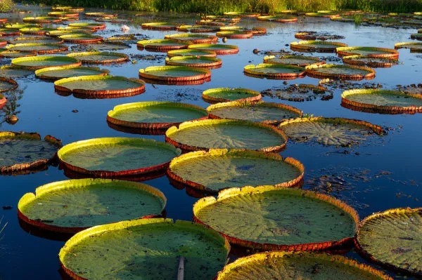
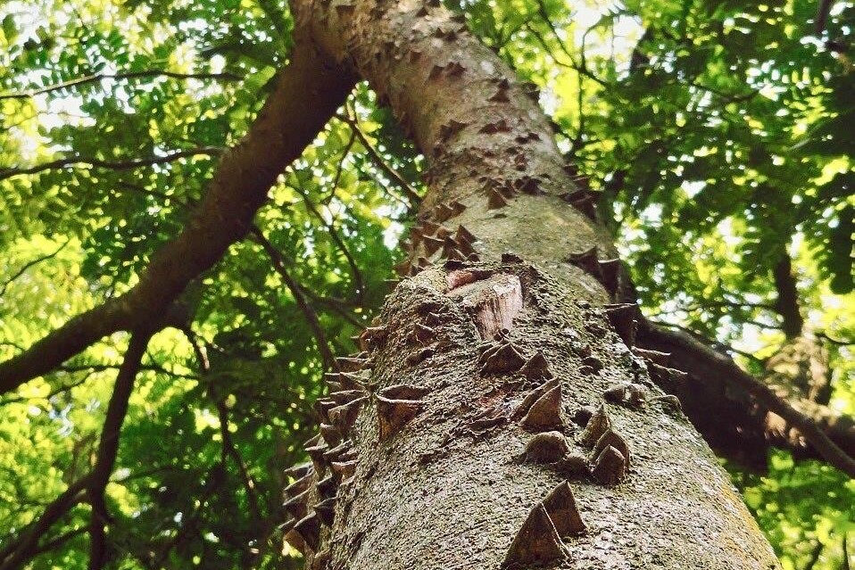
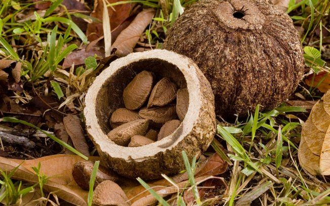
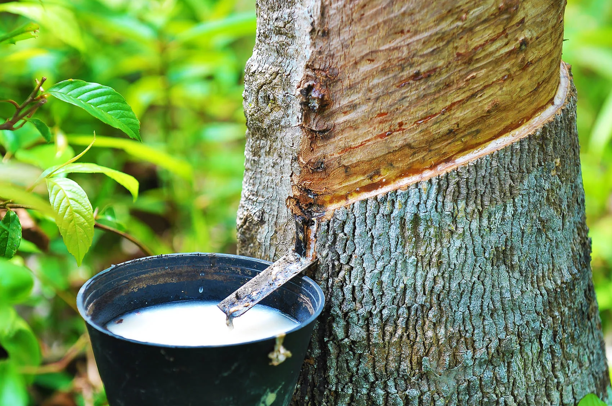

• Vitória-Régia (Victória amazonica)
A vitória-régia é uma planta aquática nativa da região amazônica, reconhecida por suas impressionantes folhas circulares que podem atingir até 2,5 metros de diâmetro. Essas folhas flutuam sobre águas calmas e rasas, sustentadas por pecíolos longos e flexíveis que se ancoram no fundo dos corpos d'água. A planta é notável por suas flores grandes e perfumadas, que abrem à noite com coloração branca e, no segundo dia, tornam-se rosadas antes de murchar. A vitória-régia desempenha um papel ecológico crucial, oferecendo abrigo e alimento para diversas espécies aquáticas, além de ser um símbolo cultural da Amazônia, associado a lendas indígenas que destacam sua beleza e mistério.
• Pau-brasil (Paubrasilia echinata)
O pau-brasil é uma árvore nativa da Mata Atlântica brasileira, reconhecida por sua madeira de alta qualidade e cor avermelhada intensa. Com altura que varia de 8 a 12 metros, apresenta folhas compostas, flores amarelas com uma mancha vermelha e frutos do tipo vagem. Historicamente, sua madeira foi amplamente explorada para a produção de corantes e instrumentos musicais, o que levou a espécie à beira da extinção. Atualmente, o pau-brasil é protegido por lei e encontra-se na lista de espécies ameaçadas de extinção, sendo essencial para a preservação da biodiversidade e da identidade cultural brasileira.
• Castanheira-do-Pará (Bertholletia excelsa)
A castanheira do Pará é uma imponente árvore amazônica, que pode atingir 30 a 60 metros de altura com tronco reto e liso, originária das florestas de terra firme da Bacia Amazônica. Ela produz frutos lenhosos grandes (cápsulas de até 15 cm e até 2 kg), cada um contendo cerca de 15 a 24 sementes, conhecidas como castanhas do Brasil, amplamente valorizadas pelo alto teor nutricional especialmente selênio, Essa espécie é considerada vulnerável por conta do desmatamento e sua dependência de florestas intactas,
• Seringueira(Hevea brasiliensis)
A seringueira é uma árvore de origem amazônica, que alcança cerca de 20 a 30 m de altura e possui tronco cilíndrico de 30 a 60 cm de diâmetro, com casca acinzentada que exsuda látex quando cortada. Suas folhas são compostas, trifoliadas, e as flores são pequenas, reunidas em panículas. A partir do látex extraído do caule, obtém-se a borracha natural, essencial para a produção de pneus, luvas, solados e diversos produtos industriais



